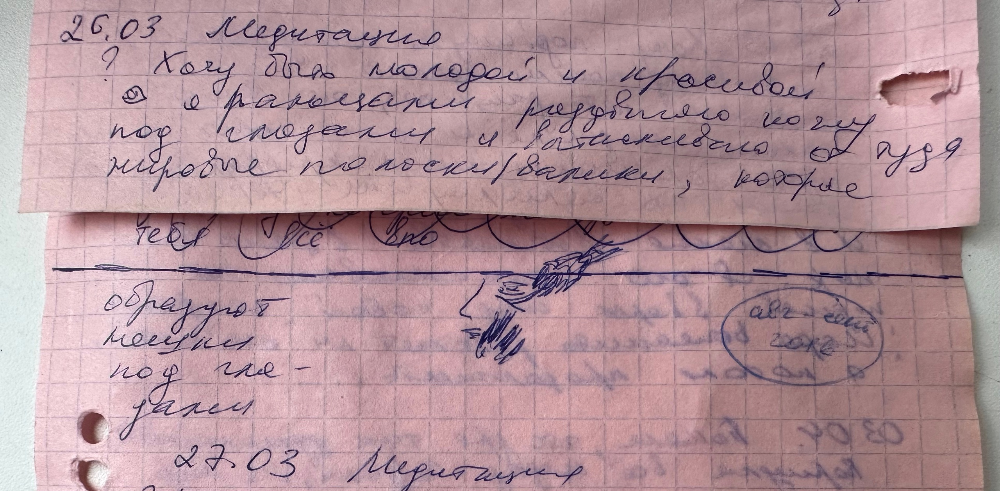

В этой статье примеры реакций тела и инсайтов по их возможным причинам 😊.
-
Вы договорились с кем-то встретиться, но сразу после этого возникли сомнения и ощущения скованности в теле,
хотя вроде бы умом вы до этого приняли сами решение о встрече... через какое-то время, все таки отменяете встречу
и чувствуете облегчение и возможно тепло в груди...
Угадайте - какое решение правильное сейчас именно для вас?
-
Вы смотрите фильм, где главная героиня все еще с мужем, несмотря на то что он был ранее алкоголиком,
изменял ей и избивал их сына, когда тот был ребенком, в состоянии опьянения ...
и сейчас у него есть психологические проблемы...
У вас резко начинает болеть копчик ...
О чем это ? О том, что вы поступили в схожей ситуации по другому или считаете, что в подобных жизненных ситуациях надо поступать по другому (от него надо было уйти с ребенком, или выгнать его, или он должен был понести законное наказание), то есть для вас подобная ситуация не проработана, вы не принимаете, что героиня поступила по другому, а подсознательно чувствуете, что думаете неверно и испытываете негативные эмоции связанные с подобной ситуацией...
Как проработать? Взглянуть снова на подобную ситуацию, как бы вы поступили сейчас? И если все таки иначе чем героиня фильма, то просто примите себя, ведь для каждого в свое время разное решение... и если боль в копчике прошла, значит вы все правильно переосмыслили.
-
Увидели рекламу тура на Алтай (Дагестан, Абхазию, Мальдивы), захотелось перейти по этой ссылке и посмотреть,
читаете описание и чувствуете тепло и расширение, значит вам туда надо ...
Создайте намерение туда поехать и все сложится наилучшим образом.
-
При определенной радостной или негативной эмоции на действия какого-то человека у вас мгновенная реакция тела
(например выскакивает простудный волдырь на губе)...
Что это может значить? Скорее всего этот человек не оправдал ваши ожидания при негативной реакции или вы сильно преувеличиваете (она меня "лайкнула", значит она восторгается мной...) свои ожидания от общения с человеком в результате радостной реакции...
Что делать? Перестать ждать, что плохой человек станет хорошим и будет вести себя так как вам бы хотелось, а хороший человек вам что-то должен...
И в течении короткого времени физическое негативное проявление симптома простуды исчезнет, а если не отработали свои эмоции, то будет не проходить в течении пары недель, давая вам время, все таки осознать что происходит...
-
Вы поругались с тещей и заболел копчик или схватило живот...
Что означает ? Неправильная реакция на обсуждения проблем.(... да как ей такое в голову приходит ... это мои дети и сам знаю как воспитывать...) вызывает раздражение и соответствующую реакцию в теле...
Как реагировать? Сказать НЕТ можно с любовью и пониманием в следствии принятия чужого мнения, но оставаясь при своем.
-
Вы в привычной среде (дом или работа) и все вроде бы, как всегда, но вдруг резко краснеет глаз и возникает режущая боль ... и это периодически повторяется, как вам кажется без причин...
Что происходит? Скорее всего срабатывает триггер в подсознании, вы резко начинаете переживать из-за чего-то...
Что делать? Осознать из-за чего переживаете и понять, что ваше тело вам говорит таким образом, что эти переживания вам не нужны, они не обоснованы, это какие-то страхи, которые вы сами себе надумали...
И тогда покраснение быстро пройдет и повторяться не будет.
-
Вы пришли в медучреждение и почувствовали сильный запах дезинфицирующих средств.
А через пару минут замечаете, что все тело покрылось плотной мелкой испариной (вспотели).
Что происходит? Ваше тело создало защитную оболочку от негармоничной для вашего тела воздействия данного пространства.
Что делать? Поблагодарить тело за заботу, а себя за осознанность.
Это самый простой способ соединения со своим высшим Я.
Которое говорит с нами и через тело тоже. Оно знает будущее, оно направляет, оно подсказывает через физическое тело и возникающие эмоции, помогает освободиться от той частоты вибраций в которой задержались и перейти на более высокий уровень
С любовью, продолжение следует.
Удачи !
